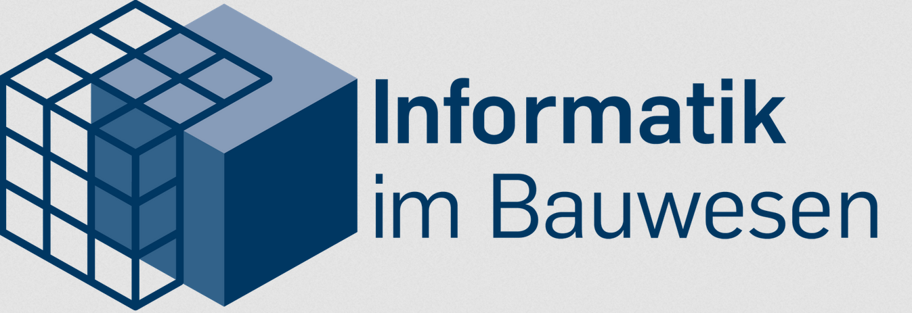

<mat-toolbar class="header-toolbar">
    <button data-cy="header-toggle-projectlist" id="project-list-hide-button" class="burger-menu-button" (click)="toggleMenu()">
        <mat-icon>menu</mat-icon>
    </button>
    <button data-cy="header-dashboard-projectlist" (click)="openDashboard()" class="dashboard-button">
      <mat-icon>dashboard</mat-icon>
    </button>
    <button data-cy="header-dashboard-projectlist" (click)="logout()" class="dashboard-button">
      <mat-icon>logout</mat-icon>
    </button>
    <span class="spacer"></span>
    
</mat-toolbar>